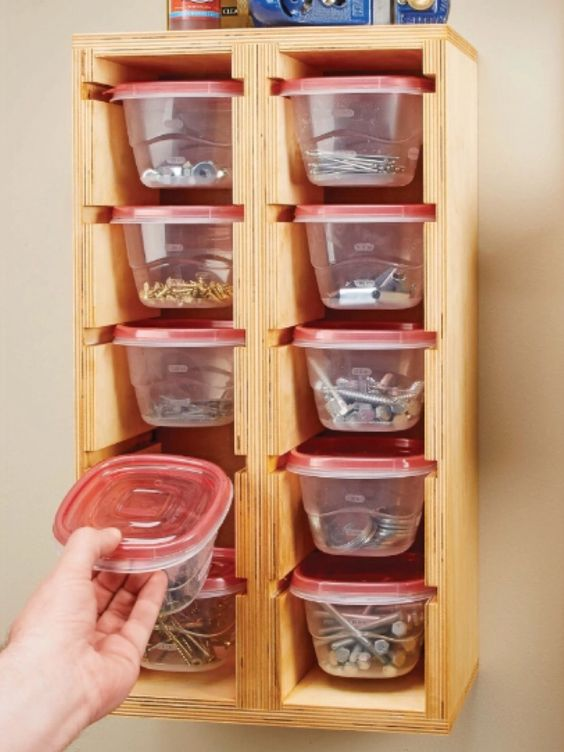
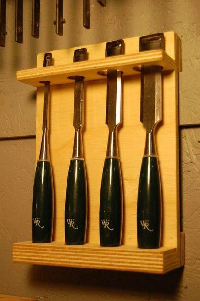
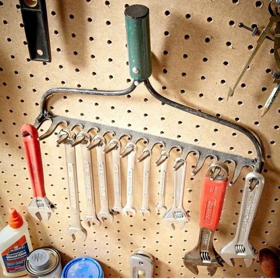
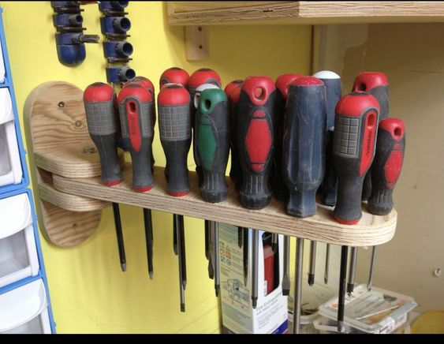
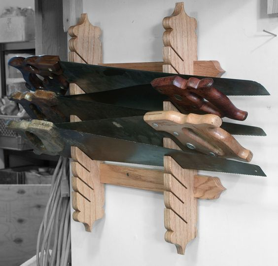
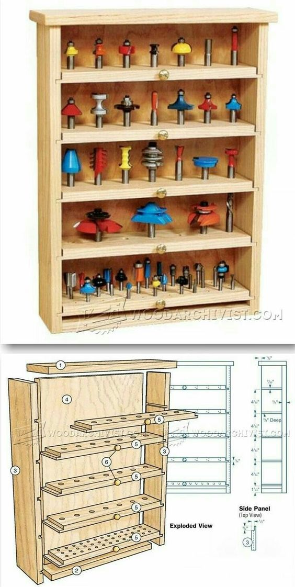
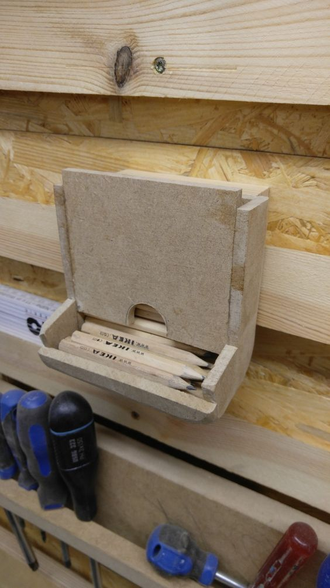

Pinterest is a great website to get inspired for your creative projects. And it even has good ideas sometimes! Unfortunately, it also has tons of bad ideas. Now that I've finally put French cleats in my workshop, I've been looking to add some more tool holders. And boy, did I find some stinkers on Pinterest! Here are some of the worst ones I've seen so far:
The Tupperware Rack

What I love about this design is that it's worse than a €30 screw organizer because you have to pull the lid off the cup before you can get to the hardware inside. But it's also worse than a stack of €3 buckets to throw your screws in because the rack isn't modular in the slightest. Hope you can still find these exact plastic buckets ten years from now!
Feasibility Score: 2/10 — A poor way to recycle your salad dressing cups
The Bleeder

At first glance, this tool holder looks like a great way to store your chisels. Especially when you have exactly four chisels. Imagine taking one out, though. You would grab it by the handle, move it up slightly, and then move it out, right? But if you do that at even a slight angle, the chisel, specifically the sharp bit, will hit the perfectly sized hole, get caught, and potentially rip the whole holder from the wall with it.
Feasibility Score: 3/10 — Nice plywood usage, but this is completely impractical
The Lazy Bones

What a cute way to store your wrenches! You just have to assume you'll never have to use that garden rake again. And that you'll never buy four additional small wrenches. Or one big one.
Feasibility Score: 1/10 — Even Five Minute Crafts would be embarrassed to call this a "hack"
The Rotating Stabber Station

This is a well-executed implementation of a questionable design. There's enough room for additional screwdrivers in the holder, so points for that. And the wood has been rounded, which is a great touch. But was it really necessary to add a pivot point to this rack? Are you really that desperate for 20 to 30 cm of horizontal space on your wall?
Feasibility Score: 7/10 — This is totally doable; you just... shouldn't
The Horizontal Conundrum

Hey, buddy. The boys and I have been discussing your "horizontal saw" idea. We love it, yeah., of course. But we were just wondering, have you looked at a saw before? You have? And you saw that they're usually longer than they're wide? You did? And is that why you decided to hang them... horizontally... with the teeth pointing toward the holder? Ah, it's an art project. Now I get it.
Feasibility Score: 0/10 — Try searching for "saw rack" on Pinterest and counting how many horizontal designs you find. I'll wait.
The Action Figure Cabinet

You know a design is Pinterest-approved when it looks awesome.... until you think about actually using it. How would you get one of these drill bits out if you need to use them? You would pinch it at the bottom and pull it upward, obviously. And then it would get stuck in the hole, so you apply a bit more force, and now it's stuck on the bottom of the next shelf. This is why sensible drill storage tilts the whole thing forward by about 30 degrees.
Feasibility Score: 3/10 — I guess the shelves are removable, technically
The Pencil Holder

Remember when you were a kid, and your parents would drag you to IKEA against your will? And you would retaliate by stuffing every pocket of your pants and coat with those stupid little pencils? But maybe that was just me.
Feasibility Score: 10/10 — Fuck yeah, looks like I found my next weekend project